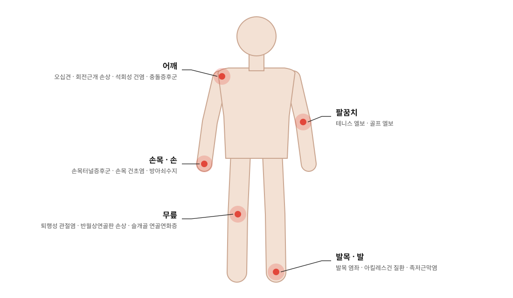
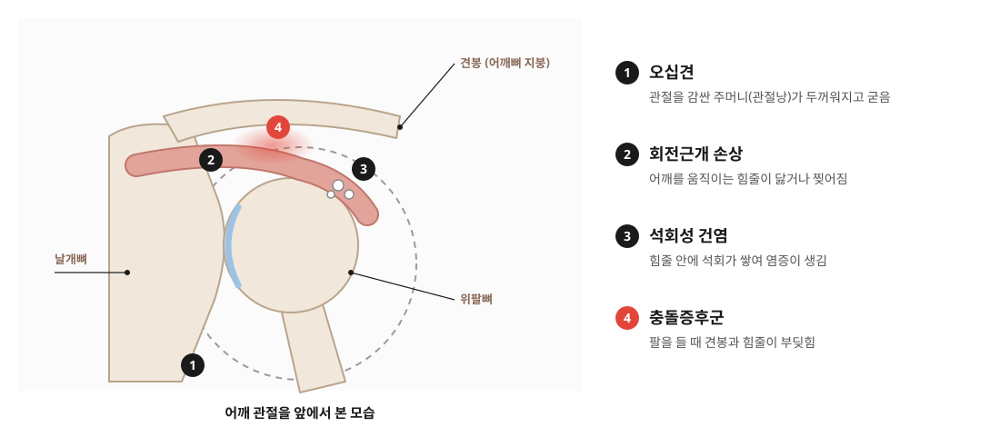
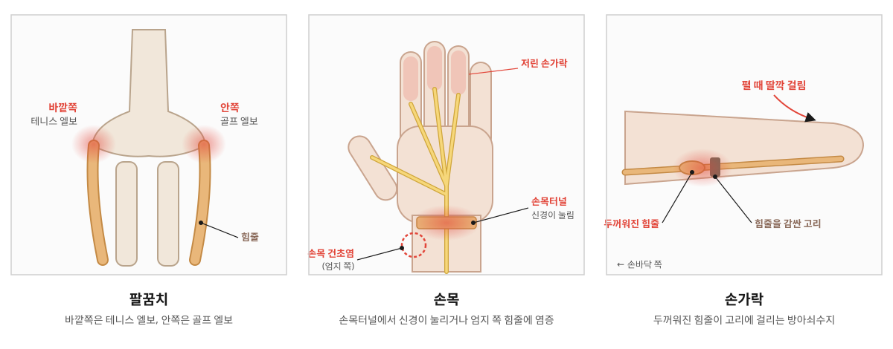
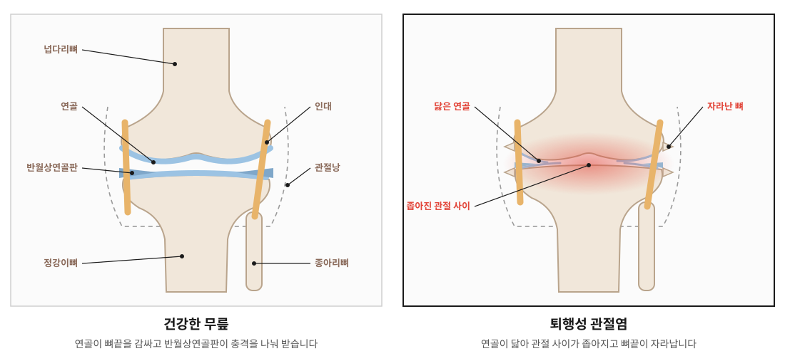
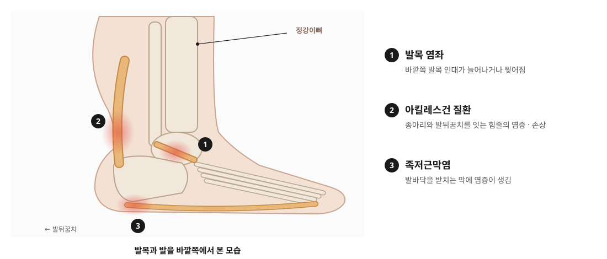

오십견 (유착성 관절낭염)
어깨 관절을 감싼 주머니(관절낭)에 염증이 생기고 굳어 어깨가 잘 움직이지 않는 상태입니다.
이런 증상 · 팔을 올리거나 뒤로 돌리기 어려움, 밤에 심해지는 통증
홈 > 통증 > 관절 질환
쓰는 만큼 지치는 관절, 아픈 이유부터 살핍니다
JOINT
관절은 뼈와 뼈가 만나 움직이는 곳입니다. 뼈끝은 매끄러운 연골로 덮여 있고, 인대와 힘줄, 근육이 관절을 붙잡아 움직임을 만들어 냅니다.
같은 동작을 오래 반복하거나 나이가 들며 연골과 힘줄이 약해지면, 또는 운동과 사고로 다치면 관절 주변에 염증이 생깁니다. 그러면 붓고 아프며 움직일 수 있는 범위가 점점 줄어듭니다.
갈창림한의원은 아픈 관절과 함께 그 관절에 부담을 준 자세와 사용 습관까지 살펴 치료합니다.

CONDITIONS

어깨 관절을 감싼 주머니(관절낭)에 염증이 생기고 굳어 어깨가 잘 움직이지 않는 상태입니다.
이런 증상 · 팔을 올리거나 뒤로 돌리기 어려움, 밤에 심해지는 통증
어깨를 움직이는 네 개의 힘줄(회전근개)이 반복 사용이나 노화, 부상으로 손상된 상태입니다.
이런 증상 · 특정 각도에서 아픔, 팔을 들고 버티기 힘듦
어깨 힘줄에 석회가 쌓여 염증을 일으키는 상태입니다. 갑자기 심한 통증이 시작되기도 합니다.
이런 증상 · 잠을 설칠 정도의 통증, 팔을 들기 어려움
팔을 들 때 어깨뼈와 힘줄이 부딪히며 염증과 통증이 생기는 상태입니다.
이런 증상 · 팔을 어깨 높이 이상 올릴 때 통증, 걸리는 느낌

손목과 손가락을 반복해서 쓰며 팔꿈치 바깥쪽이나 안쪽 힘줄에 염증이 생긴 상태입니다. 운동뿐 아니라 집안일과 컴퓨터 작업으로도 생깁니다.
이런 증상 · 물건을 쥐거나 들 때 팔꿈치 통증
손목 안쪽의 좁은 통로(손목터널)에서 신경이 눌리는 상태입니다.
이런 증상 · 엄지·검지·중지 저림, 밤에 심해지는 저림
엄지 쪽 손목 힘줄을 감싼 막에 염증이 생긴 상태입니다. 손을 많이 쓰거나 아이를 자주 안는 분께 흔합니다.
이런 증상 · 엄지 쪽 손목 통증과 붓기, 비틀 때 통증
손가락을 굽히는 힘줄이 두꺼워져 움직일 때 걸리는 상태입니다.
이런 증상 · 손가락을 펼 때 딸깍 걸림, 아침에 뻣뻣함

오랜 사용과 노화로 무릎 연골이 닳아 염증과 통증이 생기는 상태입니다.
이런 증상 · 계단을 오르내릴 때 통증, 붓고 뻣뻣함, 소리
무릎 사이에서 충격을 받아 주는 반달 모양 연골판이 찢어진 상태입니다. 무릎을 굽힌 채 비틀 때 잘 생깁니다.
이런 증상 · 쪼그려 앉을 때 통증, 걸리거나 힘이 빠지는 느낌
무릎 앞 무릎뼈(슬개골) 뒤쪽 연골이 약해지고 물러진 상태입니다. 젊은 층에도 흔합니다.
이런 증상 · 무릎 앞쪽 통증, 오래 앉았다 일어날 때 통증

발목을 접질려 인대가 늘어나거나 찢어진 상태입니다. 제대로 회복되지 않으면 자주 삐는 습관이 남을 수 있습니다.
이런 증상 · 붓기와 멍, 디딜 때 통증, 자주 삐끗함
종아리 근육과 발뒤꿈치를 잇는 아킬레스건에 염증이 생기거나 일부가 손상된 상태입니다. 달리기·점프처럼 많이 쓰는 운동이나 갑자기 늘어난 활동량 뒤에 흔합니다.
이런 증상 · 발뒤꿈치 위쪽 통증과 붓기, 아침에 뻣뻣함, 까치발이 힘듦
발바닥을 받치는 두꺼운 막(족저근막)에 염증이 생긴 상태입니다.
이런 증상 · 아침 첫발을 디딜 때 발뒤꿈치 통증, 오래 걸으면 심해짐
TREATMENT
염증과 통증을 가라앉히고, 굳은 관절의 움직임을 되찾고, 약해진 힘줄과 근육의 회복을 돕습니다.
01 · 통증 완화
염증과 붓기를 가라앉힙니다
관절 주변의 뭉친 근육과 힘줄에 침을 놓아 긴장을 풉니다. 약침은 염증이 생긴 자리에 약침액을 넣어 붓기와 통증을 가라앉히는 데 도움을 줍니다.
이런 분께 · 붓고 열감이 있거나 누르면 아픈 분
02 · 움직임 회복
굳은 관절의 움직임을 되찾습니다
한의사가 손으로 관절을 부드럽게 움직이고 바로잡아 굳은 관절이 움직이는 범위를 넓힙니다. 어깨와 골반처럼 주변의 틀어진 균형도 함께 바로잡아 관절의 부담을 줄입니다.
이런 분께 · 관절이 굳어 움직이기 어려운 분
03 · 몸 안쪽 회복
약해진 힘줄과 근육의 회복을 돕습니다
관절 주변의 염증을 가라앉히고 약해진 힘줄과 인대, 근육이 회복되도록 체질과 상태에 맞춰 처방합니다.
이런 분께 · 통증이 오래되었거나 여러 관절이 아픈 분
04 · 순환 · 이완
순환을 돕고 굳은 근육을 풀어 줍니다
핫팩과 적외선으로 관절 주변을 따뜻하게 풀고, ICT로 깊은 곳의 근육을 자극합니다. 뜸과 부항으로 막힌 순환을 풀어 회복을 돕습니다.
이런 분께 · 관절 주변이 뻣뻣하고 차가운 분
FLOW
물리치료로 굳은 근육을 먼저 따뜻하게 풀어 준 뒤 침·약침과 추나를 진행합니다.
※ 그날의 몸 상태에 따라 일부 치료는 달라질 수 있습니다.
CAUTION
아래와 같은 경우는 골절이나 큰 손상, 감염 같은 다른 원인이 있을 수 있어 영상 검사가 가능한 병원에서 먼저 확인하는 것이 안전합니다.
CARE
※ 치료에 대한 반응과 회복 속도는 개인차가 있습니다.
FAQ
시간이 지나며 통증이 줄어드는 경우도 있지만 오래 걸리고, 그동안 어깨가 굳은 채로 남을 수 있습니다. 통증과 굳은 정도에 맞춰 치료하며 움직임을 되찾는 것이 좋습니다.
오십견은 다른 사람이 팔을 들어 줘도 잘 올라가지 않을 만큼 어깨 전체가 굳는 경우가 많고, 회전근개 손상은 스스로 들기는 힘들어도 다른 사람이 들어 주면 올라가는 경우가 많습니다. 정확한 구분은 진찰이 필요합니다.
한 번 닳은 연골이 원래대로 돌아오기는 어렵습니다. 치료는 통증과 염증을 줄이고 주변 근육과 관절의 움직임을 지켜, 일상생활을 편하게 하는 것을 목표로 합니다.
통증이 심할 때는 쉬는 것이 좋고, 통증이 줄면 무릎에 무리가 덜 가는 걷기나 근력 운동을 천천히 늘려 가는 것이 도움이 됩니다. 지금 상태에 맞는 운동을 안내해 드립니다.
통증이 심한 초기에는 자주 치료받는 것이 좋고, 좋아질수록 간격을 넓혀 갑니다. 진찰 후 지금 상태에 맞는 내원 간격을 안내해 드립니다.
TIME